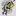
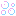

Icon Library Page 31
The icons listed here have been 'described' using multiple types of neural networks. Much of the data is junk. The label is the most likely object in the image, however none of this has been verified by a human. When this page is re-generated the labeling might change.
The best way to use this page is to use the ctrl+f search function.
Page Index
[1] [2] [3] [4] [5] [6] [7] [8] [9] [10] [11] [12] [13] [14] [15] [16] [17] [18] [19] [20] [21] [22] [23] [24] [25] [26] [27] [28] [29] [30] [31] [32] [33] [34] [35] [36] [37] [38] [39] [40] [41] [42] [43] [44] [45] [46] [47] [48] [49] [50] [51] [52] [53] [54] [55] [56] [57] [58] [59] [60] [61] [62] [63] [64] [65] [66] [67]
| image | labels |
|---|---|
| espresso maker, person, oil filter, barrel, nipple, stopwatch, stop watch | |
| Windsor tie, person, pickelhaube, Windsor tie, academic gown, academic robe, judge's robe, sweatshirt | |
| redbone, person, overskirt, ocarina, comic book, wig | |
| safety pin, person, komondor, komondor, letter opener, paper knife, paperknife, face powder | |
| ocarina, person, nipple, ocarina, comic book, packet | |
| panpipe, tree, maraca, rock beauty, maraca, analog clock | |
| spatula, sun, corn, rock beauty, hair slide, thresher, thrasher, threshing machine | |
| pick, flower, pick, maraca, hair slide, hair slide | |
| ocarina, dog, packet, red-breasted merganser, book jacket, dust cover, dust jacket, dust wrapper, packet | |
| ocarina, person, chain saw, maraca, maraca, chain saw, chainsaw | |
| ocarina, spaceship, nipple, whistle, thresher, thrasher, threshing machine, hair slide | |
| fox squirrel, flower, marmoset, patas, book jacket, dust cover, dust jacket, dust wrapper, spider monkey, Ateles geoffroyi | |
| Windsor tie, person, pick, nematode, cornet, horn, trumpet, trump, hook, claw | |
| milk can, tree, barrel, milk can, packet, milk can | |
| plane, car, thresher, plunger, motor scooter, scooter, lawn mower, mower | |
| nipple, person, hatchet, whistle, bow, muzzle | |
|  | safety pin, person, chain saw, rock beauty, jersey, T-shirt, tee shirt, chain saw, chainsaw |
| panpipe, tree, packet, eft, milk can, packet | |
| hourglass, person, Windsor tie, hatchet, punching bag, punch bag, punching ball, punchball, hatchet | |
| Windsor tie, person, bolo tie, punching bag, chain saw, chainsaw, chain saw, chainsaw | |
| can opener, person, ski, Japanese spaniel, ski, pick, plectrum, plectron | |
| maraca, tree, maraca, maraca, thresher, thrasher, threshing machine, chain saw, chainsaw | |
| Windsor tie, person, safety pin, clumber, safety pin, safety pin | |
| digital clock, person, digital clock, radiator, cassette, digital clock | |
| digital clock, sun, chain saw, rock beauty, chain saw, chainsaw, chain saw, chainsaw | |
| power drill, car, combination lock, whistle, ski, ski | |
| ambulance, person, scoreboard, rock beauty, chain saw, chainsaw, chain saw, chainsaw | |
| abacus, person, ballpoint, whistle, abacus, hatchet | |
|  | digital clock, person, honeycomb, safety pin, stopwatch, stop watch, scoreboard |
| digital clock, person, pool table, digital clock, rule, ruler, ballpoint, ballpoint pen, ballpen, Biro | |
| punching bag, person, can opener, punching bag, knee pad, espresso maker | |
| sunscreen, person, Band Aid, Windsor tie, comic book, sweatshirt | |
| ocarina, person, wig, nipple, comic book, hourglass | |
| lotion, person, maraca, hand-held computer, nipple, maraca | |
| book jacket, person, digital clock, book jacket, book jacket, dust cover, dust jacket, dust wrapper, book jacket, dust cover, dust jacket, dust wrapper | |
| hand-held computer, person, Windsor tie, pedestal, loudspeaker, speaker, speaker unit, loudspeaker system, speaker system, remote control, remote | |
| Windsor tie, person, digital watch, Kerry blue terrier, chain saw, chainsaw, magnetic compass | |
| sunscreen, person, maraca, spaghetti squash, nipple, analog clock | |
| thresher, car, thresher, thresher, thresher, thrasher, threshing machine, chain saw, chainsaw | |
| chain saw, person, thresher, chain saw, chain saw, chainsaw, chain saw, chainsaw | |
| screen, person, oil filter, sunscreen, loupe, jeweler's loupe, lotion | |
| consomme, person, consomme, frying pan, pick, plectrum, plectron, packet | |
| spotlight, person, panpipe, rock beauty, pick, plectrum, plectron, panpipe, pandean pipe, syrinx | |
| panpipe, phone, face powder, hatchet, pick, plectrum, plectron, stopwatch, stop watch | |
| digital clock, person, digital clock, digital clock, pick, plectrum, plectron, cleaver, meat cleaver, chopper | |
| hand-held computer, person, safety pin, ocarina, nipple, safety pin | |
| ocarina, person, ocarina, ocarina, panpipe, pandean pipe, syrinx, packet | |
| wall clock, person, wall clock, ocarina, panpipe, pandean pipe, syrinx, packet | |
| slot, person, analog clock, barometer, packet, packet | |
| ocarina, person, analog clock, brown bear, book jacket, dust cover, dust jacket, dust wrapper, packet | |
| waffle iron, person, analog clock, whiskey jug, packet, ocarina, sweet potato | |
| digital clock, person, digital clock, digital clock, digital clock, scoreboard | |
| digital clock, dog, analog clock, nematode, three-toed sloth, ai, Bradypus tridactylus, chain saw, chainsaw | |
| croquet ball, tree, analog clock, rock beauty, three-toed sloth, ai, Bradypus tridactylus, analog clock | |
| analog clock, person, analog clock, pick, pick, plectrum, plectron, stopwatch, stop watch | |
| digital clock, person, cash machine, lipstick, stopwatch, stop watch, hatchet | |
| power drill, person, scoreboard, sunscreen, chain saw, chainsaw, hand-held computer, hand-held microcomputer | |
| lighter, phone, guillotine, lotion, guillotine, hair spray | |
| hourglass, phone, book jacket, analog clock, pick, plectrum, plectron, packet | |
| chain saw, tree, panpipe, vine snake, three-toed sloth, ai, Bradypus tridactylus, chain saw, chainsaw | |
| leopard, person, waffle iron, Windsor tie, pick, plectrum, plectron, puck, hockey puck | |
| screen, phone, safe, binder, guillotine, hatchet | |
| traffic light, person, Petri dish, spotted salamander, analog clock, stopwatch, stop watch | |
| digital clock, phone, pick, whistle, pick, plectrum, plectron, chain saw, chainsaw | |
| digital clock, person, comic book, rock beauty, chain saw, chainsaw, chain saw, chainsaw | |
| digital clock, person, assault rifle, cleaver, pick, plectrum, plectron, pick, plectrum, plectron | |
| digital clock, person, panpipe, matchstick, plunger, plumber's helper, guillotine | |
| espresso maker, dog, scoreboard, spatula, pick, plectrum, plectron, espresso maker | |
| panpipe, person, pick, analog clock, panpipe, pandean pipe, syrinx, pick, plectrum, plectron | |
| panpipe, sun, panpipe, rock beauty, hatchet, panpipe, pandean pipe, syrinx | |
| digital clock, dog, scoreboard, cleaver, pick, plectrum, plectron, assault rifle, assault gun | |
| panpipe, sun, panpipe, panpipe, isopod, chain saw, chainsaw | |
| bearskin, person, digital watch, pick, pick, plectrum, plectron, pick, plectrum, plectron | |
| spotlight, flower, pinwheel, whistle, analog clock, pinwheel | |
| bolo tie, person, bearskin, breastplate, siamang, Hylobates syndactylus, Symphalangus syndactylus, stopwatch, stop watch | |
| panpipe, phone, panpipe, panpipe, panpipe, pandean pipe, syrinx, guillotine | |
| digital clock, person, analog clock, digital clock, pick, plectrum, plectron, analog clock | |
| analog clock, person, analog clock, panpipe, siamang, Hylobates syndactylus, Symphalangus syndactylus, triceratops | |
| digital clock, tree, analog clock, digital clock, three-toed sloth, ai, Bradypus tridactylus, analog clock | |
| panpipe, person, analog clock, digital clock, panpipe, pandean pipe, syrinx, analog clock | |
| analog clock, person, cleaver, panpipe, siamang, Hylobates syndactylus, Symphalangus syndactylus, throne | |
| switch, phone, scoreboard, table lamp, panpipe, pandean pipe, syrinx, scoreboard | |
| digital clock, person, harmonica, space bar, panpipe, pandean pipe, syrinx, plate rack | |
| switch, person, hair spray, sunscreen, guillotine, hair spray | |
| analog clock, person, throne, bearskin, panpipe, pandean pipe, syrinx, bearskin, busby, shako | |
| digital clock, phone, panpipe, whistle, three-toed sloth, ai, Bradypus tridactylus, packet | |
| digital clock, tree, analog clock, rock beauty, three-toed sloth, ai, Bradypus tridactylus, Brabancon griffon | |
| EntleBucher, phone, gong, sloth bear, indri, indris, Indri indri, Indri brevicaudatus, chambered nautilus, pearly nautilus, nautilus | |
| digital clock, person, digital clock, space bar, chain saw, chainsaw, oboe, hautboy, hautbois | |
| plate rack, person, digital watch, hand-held computer, comic book, cuirass | |
| sunscreen, person, Windsor tie, ocarina, wig, overskirt | |
| Windsor tie, person, Windsor tie, Windsor tie, comic book, Windsor tie | |
| face powder, person, face powder, face powder, bearskin, busby, shako, bearskin, busby, shako | |
| slot, tree, analog clock, pick, pick, plectrum, plectron, analog clock | |
| whistle, person, nipple, pill bottle, oil filter, jersey, T-shirt, tee shirt | |
| muzzle, person, combination lock, ocarina, panpipe, pandean pipe, syrinx, thresher, thrasher, threshing machine | |
| panpipe, dog, ski, safety pin, hand-held computer, hand-held microcomputer, chain saw, chainsaw | |
| face powder, dog, face powder, face powder, gibbon, Hylobates lar, chain saw, chainsaw | |
| lighter, person, binder, binder, face powder, hair spray | |
| Petri dish, person, Windsor tie, safety pin, pick, plectrum, plectron, strawberry |